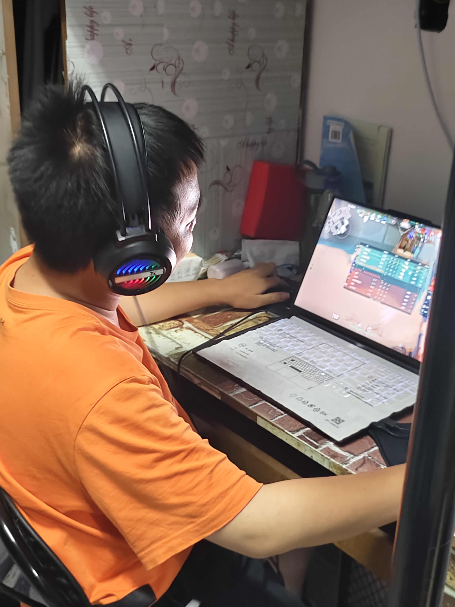

毁人避难所Alpha测试版
高思贤
在2024年的VCT冠军赛中，EDG战队的高思贤以其卓越的表现和关键的发挥帮助队伍赢得了冠军。7月20日，他随队获得了2024 VCT CN联赛年度总决赛冠军，这是赛区的首个赛区冠军。紧接着在8月25日的无畏契约全球冠军赛总决赛中，EDG在一场激烈的对决后以3:2战胜TH，高思贤荣获FMVP的荣誉。5月12日的无畏契约冠军巡回赛CN联赛第一赛段中，他助力EDG以3-1的成绩战胜FPX夺得冠军。作为队伍的决斗者，高思贤的狙击能力与个人枪法为队伍带来了激进的风格和丰富的战术选择，他那飘逸灵动的打法不仅极具观赏性，而且在东京大师赛上的出色表现赢得了“世一狙”的美誉。在全球冠军赛的总决赛中，他以111-72的KD、每回合平均193的伤害和309的平均战斗评分，完成了2次五杀、3次四杀、5次三杀、24次双杀的惊人成绩，被许多评论家和观众誉为无畏契约有史以来最伟大的选手之一。高思贤的职业高光时刻不仅证明了他的实力，也展现了他作为EDG战队核心成员的重要性。

高思贤在艰苦的环境下坚持训练